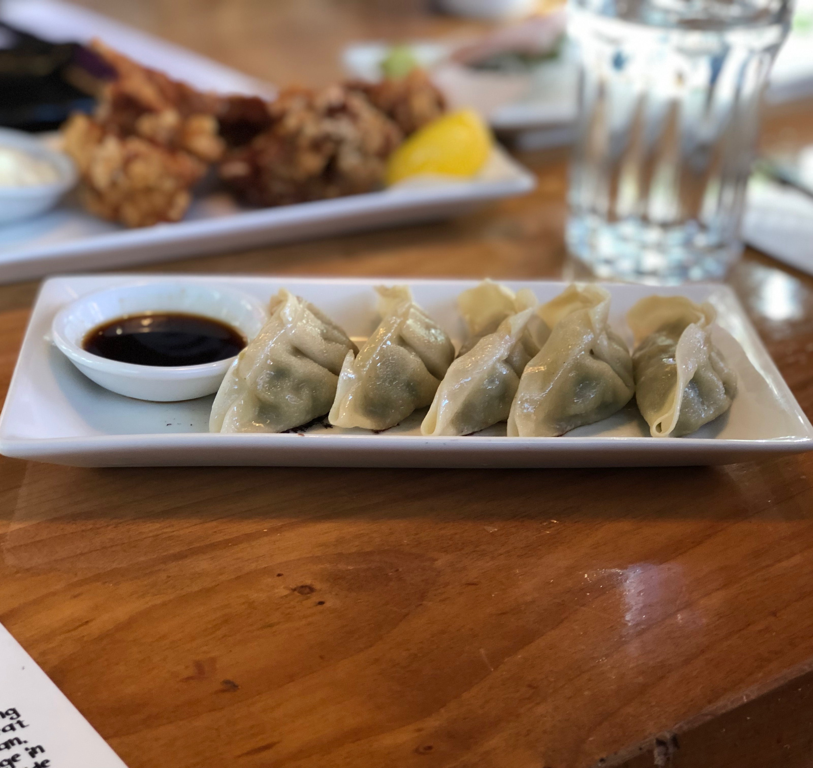

The Gyoza Restaurant
Gyoza is a sophisticated Japanese restaurant located in the heart of Montreal, offering a one-of-a-kind and exquisite dining experience. From the moment you step into the restaurant, you'll be transported to Japan, with our sleek and modern decor and warm and inviting atmosphere. From the presentation of the dishes to the quality of the ingredients, we payed attention to the smallest detail in every aspect of our restaurant.
We are specialized in gyoza, a delicious Japanese pan-fried dumplings, that are crispy on the outside and juicy on the inside. The menu offers a variety of flavors and fillings to choose from, including classic pork, succulent shrimp, rich and creamy cheese, and fresh and flavorful vegetables. Each gyoza is made with care and attention, and the flavors and textures are perfectly balanced, making each bite a delight for your senses.
In addition to its signature gyoza, we also offer a range of other Japanese cuisine staples, such as ramen, sushi, sashimi, tempura, and salads. All dishes are created using fresh and high-quality ingredients, and the chefs pay meticulous attention to the preparation and presentation of each dish. Whether you're in the mood for a comforting bowl of ramen or a delicate plate of sashimi, Gyoza has something to satisfy every palate.

To complement our delicious food, Gyoza also serves a wide range of beverages, including cocktails, wines, and sakes. The restaurant's knowledgeable and friendly staff are always happy to help diners choose the perfect beverage to accompany their meal, whether it's a bold and fruity cocktail or a crisp and refreshing sake.
Gyoza is the perfect venue for a romantic date night, a work lunch, or a family celebration. Our restaurant's cozy and intimate setting is perfect for a romantic evening, while its spacious and bright dining room is ideal for larger groups. The attentive and friendly service adds to the overall dining experience, making every visit to Gyoza memorable and enjoyable.
Gyoza is a must-visit destination for anyone looking for a unique and high-quality Japanese dining experience in Montreal. We offer excellence in service and that make us one of the best Japanese restaurants in the city. Whether you're a fan of gyoza or simply looking to try something new, we are here to impress.

Spinach and Feta
Chicken Mushroom

Kimchi Pork

Lobster and Scallop
Truffle Mushroom
Tonkotsu Ramen

Shoyu Ramen

Miso Ramen
Tantanmen Ramen
Vegetarian Ramen
Duck Ramen

Okonomiyaki

Karaage

Japanese Highball

Chu-Hai
Umeshu

Sake Martini

Yuzu Sour

Ramune
Calpico
Matcha Latte

Iced Coffee
Green Tea Latte